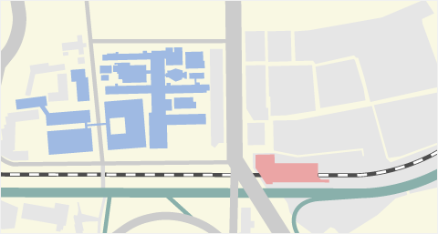

大切なお知らせ
- 2020年07月06日
- 【診療情報】入院・外来診療について
- 2020年07月06日
- 予約運用の変更について
- 2020年07月03日
- 【7月31日（金）までにご予約がある患者さん対象】電話診療による処方箋発行について
- 2020年07月03日
- ご相談とお問合せについて
- 2020年05月29日
- 新型コロナウイルス感染症対策に係るお願い
- 2020年05月22日
- 人間ドック再開のお知らせ
- 2020年05月01日
- 新型コロナウイルス感染症に関する当院の状況について
- 2020年03月18日
- 面会の禁止について
初めて受診する方

通院・再来の方

入院・面会の方

人間ドック

- 病院からのお知らせ
- 医療関係の方へのお知らせ
- 採用情報
- 2020年07月10日 お知らせ
- 当院に入院・通院された患者さんの情報を用いた医学系研究に対するご協力のお願い
- 2020年07月01日 お知らせ
- 初診診療担当医表を更新しました
- 2020年06月18日 お知らせ
- 声でのコミュニケーションが取りにくい方へのサービスが始まりました
- 2020年06月01日 お知らせ
- 初診診療担当医表を更新しました
- 2020年06月15日 お知らせ
- 慶應義塾への医療・衛生物資等のご寄付について（御礼）
- 2020年07月01日 お知らせ
- 2020年7月初診診療担当医表
- 2020年06月01日 お知らせ
- 2020年6月初診診療担当医表
- 2020年05月10日 お知らせ
- 6月8日（土） 研修医・医学部生を対象とする説明会イベント「慶應オープンホスピタル」を開催します
- 2020年06月21日 お知らせ
- ｢慶應オープンホスピタル2018｣を開催しました
- 2020年05月17日 お知らせ
- 6月16日（土） 研修医・医学部生を対象とする説明会イベント「慶應オープンホスピタル2018」を開催します
- 2020年05月17日 お知らせ
- 職員採用サイト更新しました
- 病院からのお知らせ
- 2020年07月10日 お知らせ
- 当院に入院・通院された患者さんの情報を用いた医学系研究に対するご協力のお願い
- 2020年07月01日 お知らせ
- 初診診療担当医表を更新しました
- 2020年06月18日 お知らせ
- 声でのコミュニケーションが取りにくい方へのサービスが始まりました
- 2020年06月01日 お知らせ
- 初診診療担当医表を更新しました
- 2020年06月15日 お知らせ
- 慶應義塾への医療・衛生物資等のご寄付について（御礼）
- 医療関係の方へのお知らせ
- 2020年07月01日 お知らせ
- 2020年7月初診診療担当医表
- 2020年06月01日 お知らせ
- 2020年6月初診診療担当医表
- 2020年05月10日 お知らせ
- 6月8日（土） 研修医・医学部生を対象とする説明会イベント「慶應オープンホスピタル」を開催します
- 2020年06月21日 お知らせ
- ｢慶應オープンホスピタル2018｣を開催しました
- 2020年05月17日 お知らせ
- 6月16日（土） 研修医・医学部生を対象とする説明会イベント「慶應オープンホスピタル2018」を開催します
- 採用情報
- 2020年05月17日 お知らせ
- 職員採用サイト更新しました


- 住所・電話
- 〒160-8582 東京都新宿区信濃町35 03-3353-1211（代表）
- 診療受付
- 午前8時40分～午前11時00分
- 正面玄関開錠
- 診療日：午前6時45分～午後7時15分 休診日：午後1時00分～午後7時15分 （指定の時間以外は出入口を閉鎖）
- 休診日
- 日曜日・第1・3土曜日 国民の祝日・休日 年末年始（12/30～1/4） 慶應義塾の休日（1/10）
